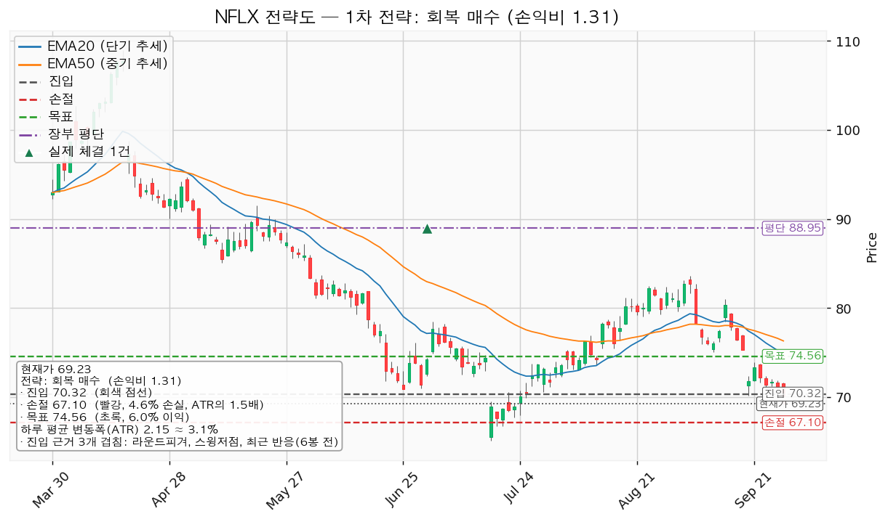
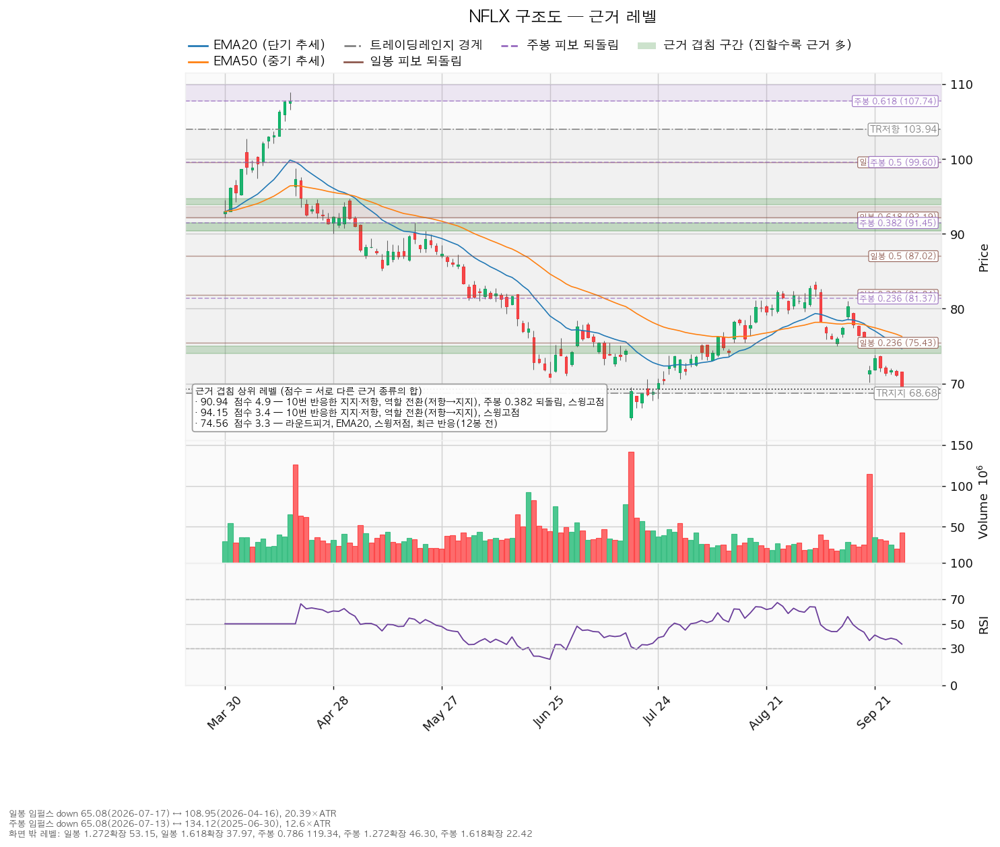
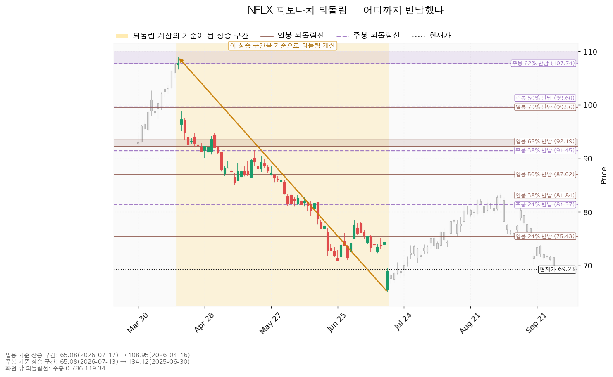
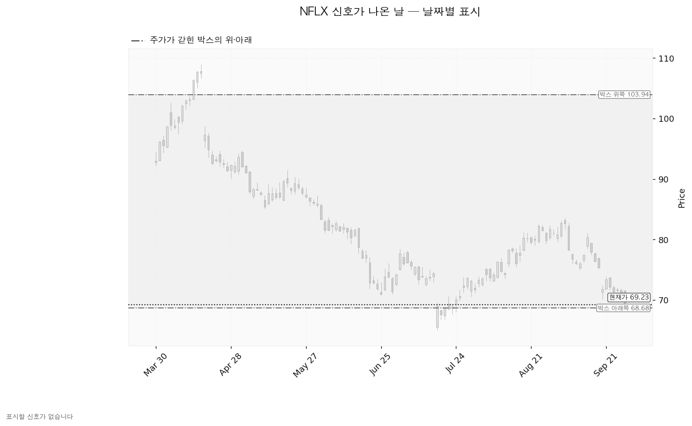

넷플릭스(NFLX)는 월정액 구독과 광고 요금제로 영화·드라마를 인터넷으로 내보내는 미국 스트리밍 기업이며, 직접 만든 콘텐츠와 사들인 콘텐츠를 함께 서비스합니다.
| 구분 | 가격 | 판정 방식 | 현재 상태 |
|---|---|---|---|
| 회복선(진입 조건) | 70.32달러 (+1.57%, 0.51 ATR 위) | 일봉 종가로 회복한 뒤 되돌림 지지 | 회복 대기 — 9/28 종가 69.23 |
| 집행 손절 | 67.10달러 (-3.08%) | 장중 저가 터치 | 보유 10주에 이미 유효, 추가분은 진입한 경우에만 |
| 관망 종료 기준 | 68.68달러 (-0.79%) 또는 10/21 실적 중 먼저 오는 쪽 | 일봉 종가로 아래 마감 | 매수 계획 종료 — 새 리포트 대기(폐기선과 같은 가격이며, 보유 10주는 아래 3단계로 판정) |
| 확인선 | 90.94달러 (+31.36%) | 일봉 종가 돌파 후 되돌림 지지 | 미돌파. 박스 상단 103.94는 그 위 맥락 |
| 폐기선 | 68.68달러 (-0.79%, 0.26 ATR 아래) | 이탈 후 3거래일 내 회복 실패(또는 66.53 아래 종가) + 반등에서 저항 확인 | 유지 중 |
| 항목 | 값 |
|---|---|
| 셋업 | 회복 매수 — 구조 증명도 회복 확인형 |
| 진입 | 70.32달러 일봉 종가 회복 확인 후 — 근거: 70달러 라운드피겨 + 스윙저점(6/25 70.86, 9/18 70.11) + 6봉 전 반응 (70.00~70.86) |
| 집행 손절 | 67.10달러 — 진입 기준선에서 ATR의 1.5배 아래 |
| 목표 | 74.56달러에서 전량 매도 (목표 도달) — 근거: 74달러 라운드피겨 + 20일선 + 스윙저점(9/10 75.03) + 12봉 전 반응 (74.00~75.03) |
| 손익비 | 1:1.31 (손절 1.50 ATR, 구조적 손절과 같은 폭이라 별도 값 없음) |
| 엣지 | 모멘텀 — 저항을 종가로 되찾으면 그 방향이 이어진다는 전제. 자주 틀리고 소수가 크게 맞는 유형이며, 이 엔진에서 측정한 값이 아닙니다 |
| 순위 배수 | 0.90배 (지수 대비 20일 초과수익 -14.92%, 상대강도선 20일 기울기 -14.97%, 거래량 최대 1.3배) |
산출된 셋업은 이 하나라 순위 배수가 대표를 바꾸지 않았습니다. 선정 사유는 손익비 1.31 × 회복 확인형 × 진입 구간의 세 근거입니다. 현재가 부근에 여러 번 반응한 가격대가 없어(가장 가까운 것이 85.50달러) 박스 안쪽이 매집 우위인데도 지지 확인 매수는 산출되지 않았습니다. 진입~목표가 1.97 ATR로 2배 미만이라 분할·트레일링 없이 74.56에서 한 번에 매도합니다(72.00에서 절반을 덜고 본전 손절로 올리는 분할안은 전 구간 손익비 1:0.92, 하한 1:0.26이라 쓰지 않습니다. 2배 기준은 관행이지 정설이 아닙니다). 모멘텀 전제에 고정 목표가 붙은 조합이지만 엔진은 정합성 경고를 내지 않았습니다. 확인선 90.94는 목표보다 멀리 있어, 목표 도달 이후 구간은 새 셋업으로 다시 잡습니다. 계획 진입가 70.32는 평단 88.95달러보다 아래라 평단을 낮추는 매수입니다.

| 단계 | 트리거 | 뜻과 행동 |
|---|---|---|
| 1 관찰 | 진입 후 일봉 종가가 70.32 아래로 마감 | 되돌아오면 속임수 하락일 수 있어 무효가 아닙니다. 신규 진입만 중단하고 손절은 그대로 둡니다 |
| 2 경고 | 이탈 후 3거래일 안에 70.32를 종가로 회복하지 못함, 또는 그 전에 일봉 종가가 68.17 아래로 마감(하루 평균 변동폭 1배만큼 더 밀림) — 둘 중 먼저 오는 쪽 | 회복 실패 가능성이 우세해집니다. 반등에서 70.32의 반응을 확인합니다 |
| 3 무효 | 반등이 70.32에서 막히고 그 아래로 되밀림 | 보유 전량 매도 (시나리오 폐기) 후 새 구조가 생길 때까지 관망 |
집행 손절 67.10은 이 판정과 무관하게 장중 터치로 작동합니다. 폐기선 68.68은 현재가에서 0.26 ATR 아래라 가격 기준으로 판정할 수 있습니다.
상승 전환. 70.32 종가 회복 후 지지 → 74.56에서 전량 매도, 이후 90.94 종가 돌파 시 새 셋업으로 다시 봅니다. 횡보 지속. 68.68을 지키며 90.94 아래 박스가 이어지는 매물 소화 국면입니다. 신규 진입은 보류하고 지지 테스트 거래량 감소·저점 절상·상승봉 대 하락봉 거래량비(지금 1.19)가 유지되는지 추적합니다. 시나리오 폐기. 68.68 이탈 후 3거래일 내 회복 실패(또는 그 전에 66.53 아래 종가) + 반등에서 저항 확인. 매집이 아니라 재분산이었다는 뜻이며 보유 전량 매도 (시나리오 폐기)입니다.
| 가격대 | 겹치는 근거 |
|---|---|
| 90.41~91.48 | 10번 반응한 가격 · 저항→지지 역할 전환 · 주봉 0.382 되돌림 · 스윙고점 (확인선) |
| 81.37~81.84 | 주봉 0.236 · 일봉 0.382 되돌림 · 10봉 전 반응 |
| 75.43~76.30 | 일봉 0.236 되돌림 · 50일선 · 12봉 전 반응 |
| 68.00~68.68 | 68달러 라운드피겨 · 박스 하단 (폐기선) |
박스는 751봉 중 180봉 창에서 판정했고 가격이 창 안에 머문 비율은 96.7%입니다(40봉 80.0%, 90봉 83.3%도 성립했으나 180봉이 가장 잘 맞았습니다). 하단 68.68 / 상단 103.94이며, 직전 구간(95.67~129.53)에서 아래로 내려와 들어온 박스입니다. 안쪽 판정은 매집 우위입니다 — 지지 테스트 거래량이 7/17 2.58배 → 8/12 0.45배 → 9/28 1.30배로 7월 저점 대비 줄었고, 저점은 65.08 → 68.88로 절상됐으며, 상승봉 거래량이 하락봉의 1.19배입니다.

되돌림은 일봉·주봉 모두 하락 구간 기준입니다. 일봉은 4/16 108.95 → 7/17 65.08 하락분의 0.236이 75.43, 주봉은 2025-06-30 134.115 → 2026-07-13 65.08의 0.236이 81.37입니다. 목표 74.56은 일봉 0.236 되돌림선 바로 아래입니다.

이번 산출에는 신호일이 없습니다. 직전 리포트가 인용한 9/18 속임수 하락은 이번 계산에서 잡히지 않았고, 9/28 저가 68.88은 박스 하단 68.68 위에서 멈췄습니다.

후행 주가수익배수 21.77배, 선행 18.16배이며 올해 이익 성장률 +41.65%, 내년 +6.29%로 성장 속도가 내년에 낮아집니다. 목표주가는 45명 평균 92.93달러, 최저 57.00, 최고 135.00이며 현재가 69.23은 최저보다 위, 평균보다 아래입니다. 내년 추정 주당순이익은 90일 -0.5%, 30일 -0.2%(올해치 -0.2% / -0.0%)로 소폭 하향이며 52주 고점 대비 -44.55% 하락에 비해 작아 하락 대부분은 배수 수축입니다 — 상향도 진행 중이 아니므로 기다릴 재평가 계기는 10/21 실적 하나입니다. 현금흐름은 2025-12-31 결산 기준 영업 +101억 달러, 잉여 +95억 달러로 흑자이고 설비투자가 +56.6% 늘었습니다. 평균 목표는 선행 주당순이익 3.81달러 기준 24.37배로 현재 18.16배보다 높아, 평균 목표까지 +34.23%는 내년 이익 성장 +6.29%보다 배수 확장에 기댑니다. 이 리포트의 목표 74.56은 19.55배이며 셋업(수 주)과 컨센서스(12개월)는 시계가 다릅니다.
손절 폭에서 역산한 비중은 계좌의 21.8%로 한 종목 한도 13%를 넘어 13%로 제한합니다. 보유 10주(941,673원, 계좌의 0.68%)를 빼면 추가분은 12.32%인 17,121,344원(환율 1,360.21 기준 12,587달러, 70.32달러에 179주)입니다. 67.10 손절 시 추가분 576.38달러(783,998원, 계좌의 -0.56%)와 보유 10주 21.30달러(28,972원)를 잃고, 현재 손실 합계 1.8%와 합쳐 2.38%로 한도 6% 안이며, 미디어 테마는 12.95%로 한도 35% 안입니다. 하루 평균 변동폭 2.15달러는 주가의 3.11%로 8% 기준을 밑돌고 손절은 그 1.5배라 도구 적합성에 문제가 없습니다. 보유 10주는 67.10에서 매도되면 평단 대비 -24.57%(-218.53달러), 74.56에서는 -16.18%입니다.
최종 판정은 회복 확인 대기입니다. 손익비 1:1.31(손절 1.50 ATR)로 1을 넘지만 조건 점검 3/9이고 미달 여섯(20일선 위·이동평균 정배열·200일선 위·52주 고점 대비·지수 대비 20일 초과수익·상대강도선 신고가)이 모두 추세 항목이라, 70.32 종가 회복을 확인한 뒤에만 179주를 집행합니다.
9/16·9/18·9/28 손절 알림이 보유 10주에 전량 매도로 나갔으나 세 가격 모두 리포트상 추가분에만 걸린 손절이었고, 체결 기록은 없습니다. 5거래일 연속 하락의 원인은 종목 뉴스 조회 수단이 없어 확인하지 못했습니다.
ATR(Average True Range)은 하루 평균 변동폭입니다. 속임수 하락(spring)은 지지선을 잠깐 뚫고 내려갔다가 되돌아 올라오는 움직임입니다.